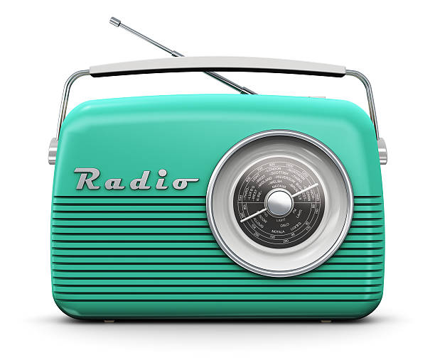

<ion-header class="custom-header">
  <div class="header-content">
    <ion-icon   name="close-circle"></ion-icon>
    <div class="title">
      <h1>{{ radioLinks.nom }}</h1>
      <span> Fréquence {{ radioLinks.fr }}</span>
    </div>
    
  </div>
</ion-header>

<ion-content>
  <div class="image-container">
    
  </div>


  <div class="audio-controls">

    <button class="control-button" (click)="playRadio()">
      <ion-icon [name]="isPlaying ? 'pause' : 'play'"></ion-icon>
    </button>

    
  </div>
</ion-content>